了解C/C++堆栈工作机制
来源：https://segmentfault.com/a/1190000038292644
1 前言
我们经常会讨论这样的问题：什么时候数据存储在堆栈(Stack)中，什么时候数据存储在堆(Heap)中。我们知道，局部变量是存储在堆栈中的；debug时，查看堆栈可以知道函数的调用顺序；函数调用时传递参数，事实上是把参数压入堆栈，听起来，堆栈象一个大杂烩。那么，堆栈(Stack)到底是如何工作的呢？ 本文将详解C/C++堆栈的工作机制。阅读时请注意以下几点：
1）本文讨论的编译环境是 Visual C/C++，由于高级语言的堆栈工作机制大致相同，因此对其他编译环境或高级语言如C#也有意义。
2）本文讨论的堆栈，是指程序为每个线程分配的默认堆栈，用以支持程序的运行，而不是指程序员为了实现算法而自己定义的堆栈。
3) 本文讨论的平台为intel x86。
4）本文的主要部分将尽量避免涉及到汇编的知识，在本文最后可选章节，给出前面章节的反编译代码和注释。
5）结构化异常处理也是通过堆栈来实现的(当你使用try…catch语句时，使用的就是c++对windows结构化异常处理的扩展)，但是关于结构化异常处理的主题太复杂了，本文将不会涉及到。
6）推荐一下自己的linuxC/C++交流群：973961276！整理了一些个人觉得比较好的学习书籍、视频资料以及大厂面经视频共享在群文件里面，有需要的小伙伴可以自行添加哦！~
2 从一些基本的知识和概念开始
1) 程序的堆栈是由处理器直接支持的。在intel x86的系统中，堆栈在内存中是从高地址向低地址扩展（这和自定义的堆栈从低地址向高地址扩展不同），如下图所示：
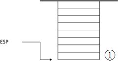因此，栈顶地址是不断减小的，越后入栈的数据，所处的地址也就越低。
2) 在32位系统中，堆栈每个数据单元的大小为4字节。小于等于4字节的数据，比如字节、字、双字和布尔型，在堆栈中都是占4个字节的；大于4字节的数据在堆栈中占4字节整数倍的空间。
3) 和堆栈的操作相关的两个寄存器是EBP寄存器和ESP寄存器的，本文中，你只需要把EBP和ESP理解成2个指针就可以了。ESP寄存器总是指向堆栈的栈顶，执行PUSH命令向堆栈压入数据时，ESP减4，然后把数据拷贝到ESP指向的地址；执行POP命令时，首先把ESP指向的数据拷贝到内存地址/寄存器中，然后ESP加4。EBP寄存器是用于访问堆栈中的数据的，它指向堆栈中间的某个位置（具体位置后文会具体讲解），函数的参数地址比EBP的值高，而函数的局部变量地址比EBP的值低，因此参数或局部变量总是通过EBP加减一定的偏移地址来访问的，比如，要访问函数的第一个参数为EBP+8。
4) 堆栈中到底存储了什么数据？ 包括了：函数的参数，函数的局部变量，寄存器的值（用以恢复寄存器），函数的返回地址以及用于结构化异常处理的数据（当函数中有try…catch语句时才有，本文不讨论）。这些数据是按照一定的顺序组织在一起的，我们称之为一个堆栈帧（Stack Frame）。一个堆栈帧对应一次函数的调用。在函数开始时，对应的堆栈帧已经完整地建立了（所有的局部变量在函数帧建立时就已经分配好空间了，而不是随着函数的执行而不断创建和销毁的）；在函数退出时，整个函数帧将被销毁。
ESP==>| : |
| . |
+-------------------------+
| 被调用者保存的寄存器现场 |
| EBX，ESI和EDI（根据需要） |
+-------------------------+
| 临时空间 |
+-------------------------+
| 局部变量#2 | [EBP - 8]
+-------------------------+
| 局部变量#1 | [EBP - 4]
+-------------------------+
EBP==>| 被调函数的EBP |
+-------------------------+
| 返回地址 |
+-------------------------+
| 实际参数#1 | [EBP + 8]
+-------------------------+
| 实际参数#2 | [EBP + 12]
+-------------------------+
| 实际参数#3 | [EBP + 16]
+-------------------------+
| 调用者保存的寄存器现场 |
| EAX，ECX和EDX（根据需要）|
+-------------------------+
| : |
| . |
5) 在文中，我们把函数的调用者称为caller（调用者），被调用的函数称为callee（被调用者）。之所以引入这个概念，是因为一个函数帧的建立和清理，有些工作是由Caller完成的，有些则是由Callee完成的。
3 开始讨论堆栈是如何工作的
我们来讨论堆栈的工作机制。堆栈是用来支持函数的调用和执行的，因此，我们下面将通过一组函数调用的例子来讲解，看下面的代码：
#include <stdio.h>
int foo1(int m, int n)
{
int p = m*n;
return p;
}
int foo(int a, int b)
{
int c = a+1;
int d = b+1;
int e = foo1(c,d);
return e;
}
int main()
{
int result=foo(3,4);
printf("%d\n",result);
while(1);
return 0;
}
这段代码本身并没有实际的意义，我们只是用它来跟踪堆栈。下面的章节我们来跟踪堆栈的建立，堆栈的使用和堆栈的销毁。
4 堆栈的建立
我们从main函数执行的第一行代码，即int result=foo(3,4); 开始跟踪。这时main以及之前的函数对应的堆栈帧已经存在在堆栈中了，如下图所示：
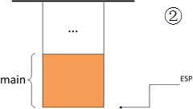可通过memory窗口来查看一下栈内存：
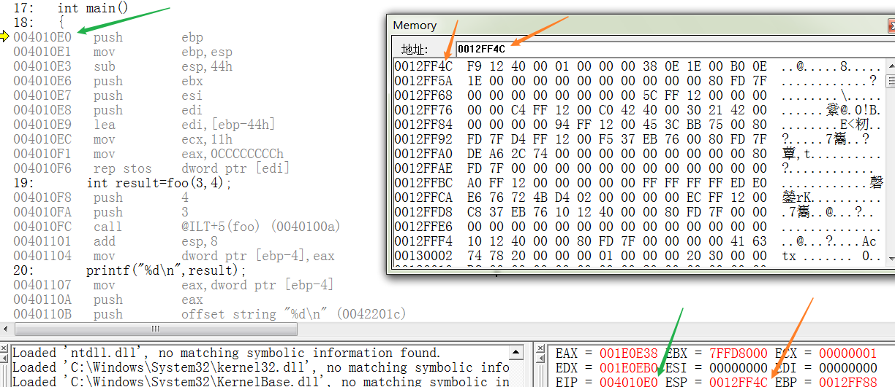4.1 参数入栈
当foo函数被调用，首先，caller（此时caller为main函数）把foo函数的两个参数：a=3,b=4压入堆栈。参数入栈的顺序是由函数的调用约定(Calling Convention)决定的，我们将在后面一个专门的章节来讲解调用约定。一般来说，参数都是从右往左入栈的，因此，b=4先压入堆栈，a=3后压入，如图：
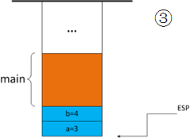此时的memory：
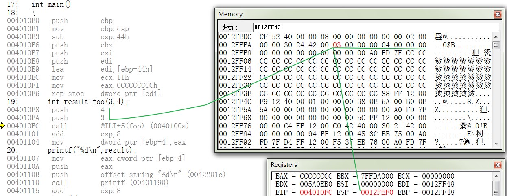4.2 返回地址入栈
我们知道，当函数结束时，代码要返回到上一层函数继续执行，那么，函数如何知道该返回到哪个函数的什么位置执行呢？函数被调用时，会自动把下一条指令的地址压入堆栈，函数结束时，从堆栈读取这个地址，就可以跳转到该指令执行了。如果当前＂call foo＂指令的地址是0x004010FC,由于call指令占5个字节，那么下一个指令的地址为0x00401101，0x00401101将被压入堆栈:
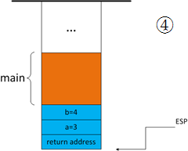此时的memory：
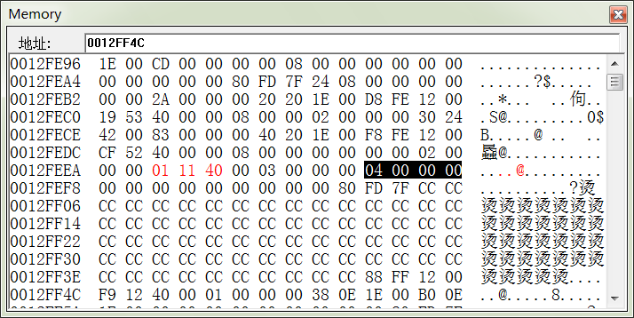4.3 代码跳转到被调用函数执行
返回地址入栈后，代码跳转到被调用函数foo中执行。到目前为止，堆栈帧的前一部分，是由caller构建的；而在此之后，堆栈帧的其他部分是由callee来构建。
4.4 EBP指针入栈
在foo函数中，首先将EBP寄存器的值压入堆栈。因为此时EBP寄存器的值还是用于main函数的，用来访问main函数的参数和局部变量的，因此需要将它暂存在堆栈中，在foo函数退出时恢复。同时，给EBP赋于新值。
1）将EBP压入堆栈
2）把ESP的值赋给EBP
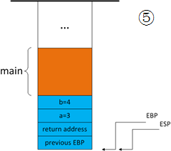此时的memory：
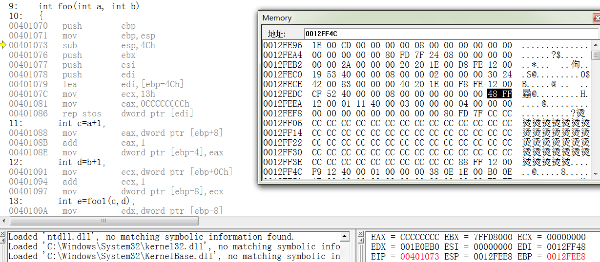这样一来，我们很容易发现当前EBP寄存器指向的堆栈地址就是EBP先前值的地址，你还会发现发现，EBP+4的地址就是函数返回值的地址，EBP+8就是函数的第一个参数的地址（第一个参数地址并不一定是EBP+8，后文中将讲到）。因此，通过EBP很容易查找函数是被谁调用的或者访问函数的参数（或局部变量）。
4.5 为局部变量分配地址
接着，foo函数将为局部变量分配地址。程序并不是将局部变量一个个压入堆栈的，而是将ESP减去某个值，直接为所有的局部变量分配空间，比如在foo函数中有ESP=ESP-0x00E4，（根据烛秋兄在其他编译环境上的测试，也可能使用push命令分配地址，本质上并没有差别，特此说明）如图所示：
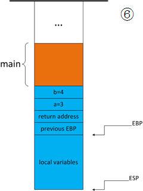此时的memory：
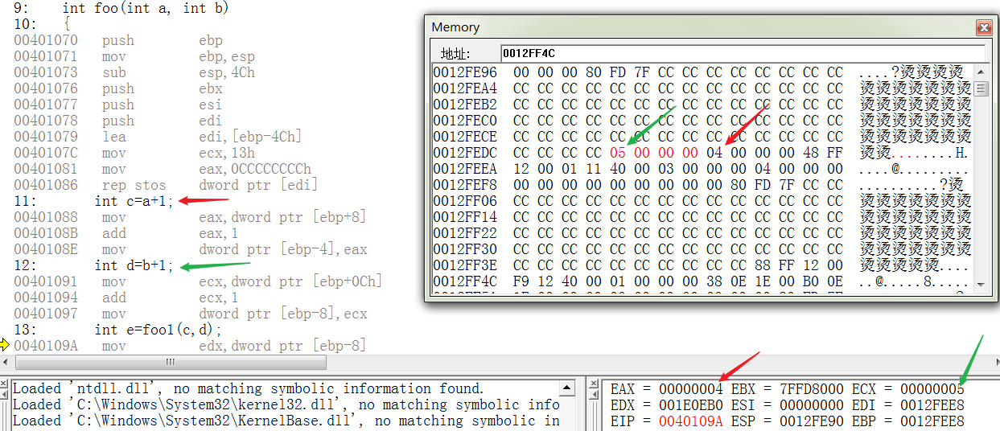奇怪的是，在debug模式下，编译器为局部变量分配的空间远远大于实际所需，而且局部变量之间的地址不是连续的（据我观察，总是间隔8个字节）如下图所示：

我还不知道编译器为什么这么设计，或许是为了在堆栈中插入调试数据，不过这无碍我们今天的讨论。
4.6 通用寄存器入栈
最后，将函数中使用到的通用寄存器入栈，暂存起来，以便函数结束时恢复。在foo函数中用到的通用寄存器是EBX，ESI，EDI，将它们压入堆栈，如图所示：

至此，一个完整的堆栈帧建立起来了。
5 堆栈特性分析
上一节中，一个完整的堆栈帧已经建立起来，现在函数可以开始正式执行代码了。本节我们对堆栈的特性进行分析，有助于了解函数与堆栈帧的依赖关系。
1）一个完整的堆栈帧建立起来后，在函数执行的整个生命周期中，它的结构和大小都是保持不变的；不论函数在什么时候被谁调用，它对应的堆栈帧的结构也是一定的。
2）在A函数中调用B函数，对应的，是在A函数对应的堆栈帧“下方”建立B函数的堆栈帧。例如在foo函数中调用foo1函数，foo1函数的堆栈帧将在foo函数的堆栈帧下方建立。如下图所示：
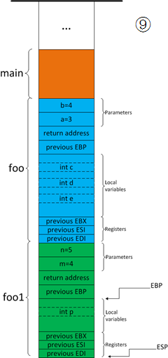3）函数用EBP寄存器来访问参数和局部变量。我们知道，参数的地址总是比EBP的值高，而局部变量的地址总是比EBP的值低。而在特定的堆栈帧中，每个参数或局部变量相对于EBP的地址偏移总是固定的。因此函数对参数和局部变量的的访问是通过EBP加上某个偏移量来访问的。比如，在foo函数中，EBP+8为第一个参数的地址，EBP-8为第一个局部变量的地址。
4）如果仔细思考，我们很容易发现EBP寄存器还有一个非常重要的特性，请看下图中：
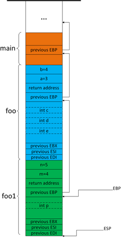我们发现，EBP寄存器总是指向先前的EBP，而先前的EBP又指向先前的先前的EBP，这样就在堆栈中形成了一个链表！这个特性有什么用呢，我们知道EBP+4地址存储了函数的返回地址，通过该地址我们可以知道当前函数的上一级函数（通过在符号文件中查找距该函数返回地址最近的函数地址，该函数即当前函数的上一级函数），以此类推，我们就可以知道当前线程整个的函数调用顺序。事实上，调试器正是这么做的，这也就是为什么调试时我们查看函数调用顺序时总是说“查看堆栈”了。
6 返回值是如何传递的
堆栈帧建立起后，函数的代码真正地开始执行，它会操作堆栈中的参数，操作堆栈中的局部变量，甚至在堆（Heap）上创建对象，balabala….，终于函数完成了它的工作，有些函数需要将结果返回给它的上一层函数，这是怎么做的呢？
首先，caller和callee在这个问题上要有一个“约定”，由于caller是不知道callee内部是如何执行的，因此caller需要从callee的函数声明就可以知道应该从什么地方取得返回值。同样的，callee不能随便把返回值放在某个寄存器或者内存中而指望Caller能够正确地获得的，它应该根据函数的声明，按照“约定”把返回值放在正确的”地方“。下面我们来讲解这个“约定”：
1）首先，如果返回值等于4字节，函数将把返回值赋予EAX寄存器，通过EAX寄存器返回。例如返回值是字节、字、双字、布尔型、指针等类型，都通过EAX寄存器返回。
2）如果返回值等于8字节，函数将把返回值赋予EAX和EDX寄存器，通过EAX和EDX寄存器返回，EDX存储高位4字节，EAX存储低位4字节。例如返回值类型为__int64或者8字节的结构体通过EAX和EDX返回。
3) 如果返回值为double或float型，函数将把返回值赋予浮点寄存器，通过浮点寄存器返回。
4）如果返回值是一个大于8字节的数据，将如何传递返回值呢？这是一个比较麻烦的问题，我们将详细讲解：
我们修改foo函数的定义如下并将它的代码做适当的修改：
MyStruct foo(`int a, int b)`
{
...
}
MyStruct定义为：
struct MyStruct
{
int value1;
__int64 value2;
bool value3;
};
这时，在调用foo函数时参数的入栈过程会有所不同，如下图所示：

caller会在压入最左边的参数后，再压入一个指针，我们姑且叫它ReturnValuePointer，ReturnValuePointer指向caller局部变量区的一块未命名的地址，这块地址将用来存储callee的返回值。函数返回时，callee把返回值拷贝到ReturnValuePointer指向的地址中，然后把ReturnValuePointer的地址赋予EAX寄存器。函数返回后，caller通过EAX寄存器找到ReturnValuePointer，然后通过ReturnValuePointer找到返回值，最后，caller把返回值拷贝到负责接收的局部变量上（如果接收返回值的话）。
你或许会有这样的疑问，函数返回后，对应的堆栈帧已经被销毁，而ReturnValuePointer是在该堆栈帧中，不也应该被销毁了吗？对的，堆栈帧是被销毁了，但是程序不会自动清理其中的值，因此ReturnValuePointer中的值还是有效的。
小于等于4个字节的返回值会被保存到EAX中，如果大于4字节，小于8字节，那么EDX也会被用来保存返回值。如果返回值占用的空间还要大，那么调用者会向被调用者传递一个额外的参数，这个额外的参数指向将要保存返回值的地址。用C语言来说，就是函数调用：
x = foo(a, b, c);
被转化为：
foo(&x, a, b, c);
注意，这仅仅在返回值占用大于8个字节时才发生。有的编译器不用EDX保存返回值，所以当返回值大于4个字节时，就用这种转换。
当然，并不是所有函数调用都直接赋值给一个变量，还可能是直接参与到某个表达式的计算中，如：
m = foo(a, b, c) + foo(d, e, f);
有或者作为另外的函数的参数， 如：
fooo(foo(a, b, c), 3);
这些情况下，foo的返回值会被保存在一个临时变量中参加后续的运算，所以，foo(a, b, c)还是可以被转化成foo(&tmp, a, b, c)。
7 堆栈帧的销毁
当函数将返回值赋予某些寄存器或者拷贝到堆栈的某个地方后，函数开始清理堆栈帧，准备退出。堆栈帧的清理顺序和堆栈建立的顺序刚好相反：（堆栈帧的销毁过程就不一一画图说明了）
1）如果有对象存储在堆栈帧中，对象的析构函数会被函数调用。
2）从堆栈中弹出先前的通用寄存器的值，恢复通用寄存器。
3）ESP加上某个值，回收局部变量的地址空间（加上的值和堆栈帧建立时分配给局部变量的地址大小相同）。
4）从堆栈中弹出先前的EBP寄存器的值，恢复EBP寄存器。
5）从堆栈中弹出函数的返回地址，准备跳转到函数的返回地址处继续执行。
6）ESP加上某个值，回收所有的参数地址。
前面1-5条都是由callee完成的。而第6条，参数地址的回收，是由caller或者callee完成是由函数使用的调用约定（calling convention ）来决定的。下面的小节我们就来讲解函数的调用约定。
8 函数的调用约定（calling convention）
函数的调用约定(calling convention)指的是进入函数时，函数的参数是以什么顺序压入堆栈的，函数退出时，又是由谁（Caller还是Callee）来清理堆栈中的参数。有2个办法可以指定函数使用的调用约定：
1）在函数定义时加上修饰符来指定，如
void __thiscall mymethod();
{
...
}
2）在VS工程设置中为工程中定义的所有的函数指定默认的调用约定：在工程的主菜单打开Project|Project Property|Configuration Properties|C/C++|Advanced|Calling Convention，选择调用约定（注意：这种做法对类成员函数无效）。
常用的调用约定有以下3种：
1）__cdecl。这是VC编译器默认的调用约定。其规则是：参数从右向左压入堆栈，函数退出时由caller清理堆栈中的参数。这种调用约定的特点是支持可变数量的参数，比如printf方法。由于callee不知道caller到底将多少参数压入堆栈，因此callee就没有办法自己清理堆栈，所以只有函数退出之后，由caller清理堆栈，因为caller总是知道自己传入了多少参数。
2）__stdcall。所有的Windows API都使用__stdcall。其规则是：参数从右向左压入堆栈，函数退出时由callee自己清理堆栈中的参数。由于参数是由callee自己清理的，所以__stdcall不支持可变数量的参数。
3）__thiscall。类成员函数默认使用的调用约定。其规则是：参数从右向左压入堆栈，x86构架下this指针通过ECX寄存器传递，函数退出时由callee清理堆栈中的参数，x86构架下this指针通过ECX寄存器传递。同样不支持可变数量的参数。如果显式地把类成员函数声明为使用__cdecl或者__stdcall，那么，将采用__cdecl或者__stdcall的规则来压栈和出栈，而this指针将作为函数的第一个参数最后压入堆栈，而不是使用ECX寄存器来传递了。
9 反编译代码的跟踪（不熟悉汇编可跳过）
以下代码为和foo函数对应的堆栈帧建立相关的代码的反编译代码，我将逐行给出注释，可对照前文中对堆栈的描述：
main函数中 int result=foo(3,4); 的反汇编：
004010F8 push 4 // b=4 压入堆栈 004010FA push 3 // a=3 压入堆栈,到达图3的状态 004010FC call @ILT+5(foo) (0040100a) // 函数返回值入栈,转入foo中执行,到达图4的状态 00401101 add esp,8 // foo返回,由于采用__cdecl,由Caller清理参数 00401104 mov dword ptr [ebp-4],eax // 返回值保存在EAX中,把EAX赋予result变量
下面是foo函数代码正式执行前和执行后的反汇编代码
004010E0 push ebp // 把ebp压入堆栈
004010E1 mov ebp,esp // ebp指向先前的ebp,到达图4的状态
004010E3 sub esp,44h // 为局部变量分配0E4字节的空间,到达图5的状态
004010E6 push ebx // 压入EBX
004010E7 push esi // 压入ESI
004010E8 push edi // 压入EDI,到达图8的状态
004010E9 lea edi,[ebp-44h] // 以下4行把局部变量区的每个字节都初始化为cch
004010EC mov ecx,11h
004010F1 mov eax,0CCCCCCCCh
004010F6 rep stos dword ptr [edi]
...... //省略代码执行N行
......
00401125 pop edi // 恢复EDI
00401126 pop esi // 恢复ESI
00401127 pop ebx // 恢复EBX
00401128 add esp,44h // 回收局部变量地址空间
0040112D call __chkesp (00401150)
00401132 mov esp,ebp
00401134 pop ebp // 恢复EBP
00401135 ret // 弹出函数返回地址，跳转到函数返回地址执行
// (__cdecl调用约定,Callee未清理参数)